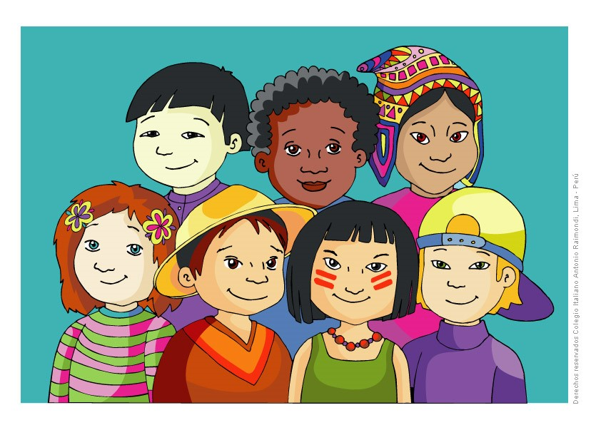

Algunos de los exponentes de la cultura china son su mitología, su filosofía, su música y su arte. Adoptó
mucha cultura de sus alrededores como el budismo de la India, dando origen al budismo chán. China fue cuna de dos importantes corrientes filosóficas, el confucianismo y el taoísmo. Desde el periodo de los Tres augustos y cinco emperadores,
el principal gobernante ha sido algún monarca. En los diferentes periodos se han empleado nombres diferentes para referirse a las diversas posiciones sociales. Conceptualmente los periodos imperial y feudal son similares, con el gobierno
y los oficiales militares en la parte alta de la jerarquía social mientras que el resto de la población quedaba bajo la ley regular. Desde la Dinastía Zhou (1046-256 a. C.) en adelante, la sociedad tradicional china ha estado organizada
en un sistema jerárquico de clases socioeconómicas conocido como Las cuatro ocupaciones. El grupo preeminente es la etnia han. A lo largo de la historia muchos grupos se han asimilado a etnias vecinas o desaparecido sin dejar rastro.
Al mismo tiempo, dentro de la etnia han mantenido tradiciones culturales o peculiaridades lingüísticas. El término Zhonghua Minzu se emplea para definir el nacionalismo chino en general. En gran medida la identidad cultural tradicional
tenía relación con diferentes nombres familiares. Debido a la gran extensión y la variedad de colectividades que la componen, en China existen ocho grupos lingüísticos dentro de los cuales existen además diversos dialectos.
El idioma oficial chino y, por lo tanto, la lengua más extendida es una forma estandarizada del chino mandarín. Utilizado por más de 800 millones de personas, es el idioma con mayor cantidad de hablantes nativos y de hablantes totales
en el mundo. El mandarín es un conjunto de dialectos de comenzaron a conformarse en el siglo VI, la versión estandarizada se configuró a principios del siglo XX, para facilitar la comunicación de la población. Se basa en la forma del
mandarín utilizada en la ciudad de Pekín (Beijing). La religión es uno de los principales elementos de la cultura, ya que en muchos casos define no solo una forma de pensamiento sino que también incluye múltiples expresiones artísticas
de fines rituales. Se llama taoísmo al sistema filosófico base de la cultura china. Aunque tiene una rama religiosa, es principalmente una filosofía que se plantea como un “camino” (traducción de tao). Se basa en los escritos de los filósofos Lao Tsé y Zhuanzi.

Como su nombre lo indica, la cultura de Japón o cultura japonesa resume el modo de vivir, relacionarse y concebir el mundo de la región nipona, vale decir, de los habitantes de la nación japonesa y su cultura ancestral. Japón es un país asiático insular, situado en el Océano Pacífico frente a las costas de China y Taiwán. Se compone de un archipiélago de unas 6852 islas y en su limitada superficie de 377.915 km2 alberga a sus casi 127 millones de habitantes (censo 2015). Su cultura, fuertemente influenciada por la China en sus orígenes, posee unos 2677 años de antigüedad, y se caracteriza por una lengua propia, religiones propias y tradiciones propias, pero amalgamadas en un complejo proceso de sincretismo a lo largo de los siglos. Gobernado por una monarquía parlamentaria de larga tradición nacional, este país ha jugado un rol importante en la política asiática y mundial, especialmente en el siglo XX cuando se alió a la Alemania nazi y la Italia fascista en lo que se conoció como el Eje Berlín-Roma-Tokio durante la Segunda Guerra Mundial. Su rendición sentenció el final del conflicto, luego de que las ciudades de Hiroshima y Nagasaki fueran bombardeadas con bombas atómicas por los Estados Unidos, en una de las peores masacres militares de la historia de la humanidad. La cultura japonesa se rige en cuanto a relaciones interpersonales por el giri, nombre otorgado al conjunto de deber, obligación y honor, lo cual genera bastante contraste respecto a la tradición individualista de Occidente. Las situaciones familiares son bastante más laxas en asuntos relacionados a la moralidad o la conducta socialmente aceptada, pero a cambio la relación con los superiores jerárquicos o con los desconocidos es en extremo formal. Japón (Nippon/Nihon en japonés, escrito 日本) es un término de origen chino, que traduce “origen del sol”. En escritura pictográfica se escribe usando los símbolos correspondientes a “sol” y a “raíz”. Japón cerró sus fronteras durante más de dos siglos a toda influencia occidental, pues el shogunato (gobierno militar) imperante en el siglo XVII consideró las misiones cristianas establecidas por los navegantes portugueses desde 1549 como una estrategia para la invasión militar.